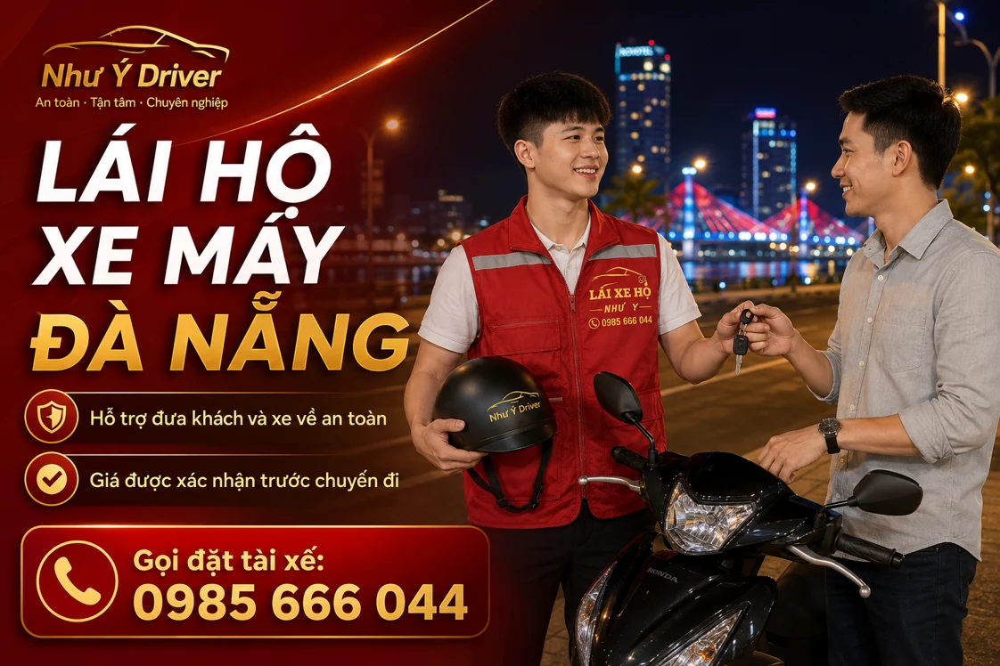

NHƯ Ý DRIVER · ĐỒNG HÀNH CÙNG BẠN
Dịch vụ lái hộ xe máy tại Đà Nẵng
Bạn có xe máy tại điểm hẹn và cần người điều khiển thay? Như Ý Driver tiếp nhận yêu cầu lái hộ xe máy tại Đà Nẵng; hãy gửi loại xe, số người cần về, địa chỉ và giờ đi để thống nhất phương án cùng giá trước chuyến.

Lái hộ xe máy là dịch vụ gì?
Lái hộ xe máy là hình thức nhờ tài xế điều khiển chính chiếc xe của bạn theo hành trình đã thỏa thuận. Dịch vụ phù hợp khi xe đã có ở điểm đón và bạn cần người lái thay, chẳng hạn sau buổi liên hoan hoặc khi không muốn tự điều khiển.
Ngay lúc liên hệ, bạn nên báo xe số, tay ga hay côn tay, số người cần về và địa chỉ trả. Cách bố trí người và xe được trao đổi trước khi nhận chuyến, thay vì mặc định mọi yêu cầu đều giống nhau.
Khi nào nên cân nhắc lái hộ xe máy?
- Sau buổi tiệc, bạn muốn đưa xe về cùng mà không tự lái.
- Bạn không muốn để xe lại qua đêm vì sáng hôm sau còn cần sử dụng.
- Bạn muốn nhờ người lái cho một hành trình đã có sẵn xe ở điểm hẹn.
- Bạn đang cân nhắc giữa lái hộ và gửi xe lại sau tiệc.
Giá lái hộ xe máy tại Đà Nẵng
Xe máy có biểu phí riêng: 0–5 km là 110.000đ, 5–7 km là 130.000đ và 7–10 km là 170.000đ. Trên 10 km có phần phí theo km; chuyến qua 23 giờ có phụ phí giờ khuya. Bạn nên xem bảng giá xe máy và hỏi tổng phí theo địa chỉ thực tế.
Khi đặt, hãy nói rõ đây là xe máy để được tư vấn đúng biểu phí. Giá thực tế được xác nhận trước chuyến đi; nếu có chờ, ghé thêm điểm hoặc thay đổi giờ, cần trao đổi lại trước khi khởi hành.
Thuận tiện khi cần cả người và xe về cùng
Việc đưa xe về cùng giúp bạn bớt một lần quay lại lấy và chủ động sử dụng vào hôm sau. Điều này hữu ích nếu địa điểm không nhận giữ xe qua đêm hoặc giờ mở bãi không khớp kế hoạch của bạn.
Tuy nhiên, cần xem cả tình trạng của người đi cùng. Nếu bạn hoặc người đi cùng không thể ngồi vững trên xe, hãy nhờ người thân hỗ trợ và chọn phương án di chuyển phù hợp. Đừng chỉ giải quyết chiếc xe mà bỏ qua nhu cầu của người.
Chuẩn bị trước khi tài xế đến
- Gửi ghim vị trí, tên địa điểm và cổng hoặc bãi nhận xe.
- Chuẩn bị chìa khóa, vé gửi xe và mũ bảo hiểm phù hợp.
- Báo đúng loại xe và số người cần di chuyển.
- Thống nhất điểm đến, giờ đi và tổng phí.
- Đối chiếu thông tin tài xế trước khi bàn giao.
Nếu chọn gửi xe lại thay vì lái hộ
Bạn cần hỏi địa điểm về quyền gửi qua đêm, giờ lấy xe, phí giữ và giấy tờ nhận xe. Khi so sánh chi phí, tính cả lượt đi về nhà lẫn lượt quay lại bãi hôm sau.
Nếu muốn kiểm tra chuyến lái hộ, gọi 0985 666 044 hoặc nhắn Zalo Như Ý Driver với loại xe, địa chỉ đón và điểm đến.
Đặt tài xế Như Ý Driver như thế nào?
- Liên hệ: gọi 0985 666 044, nhắn Zalo hoặc gửi biểu mẫu đặt tài xế.
- Gửi lịch trình: điểm đón, điểm đến, loại xe, giờ đi và các yêu cầu chờ hoặc ghé thêm điểm.
- Xác nhận chuyến: trao đổi tổng phí, thời gian đón dự kiến và thông tin người nhận xe.
- Bàn giao và kết thúc: kiểm tra xe, thực hiện hành trình, nhận lại chìa khóa và thanh toán theo nội dung đã thống nhất.
Một xe nhưng nhiều người cần về: tách rõ hai nhu cầu
Số người cần di chuyển không quyết định chỉ từ số xe ở bãi. Khi gửi yêu cầu, nói rõ bạn cần đưa xe về, đưa người về hay cả hai; nếu nhóm có nhiều xe, liệt kê từng loại xe và người liên hệ.
- Báo xe số, xe tay ga hay côn tay và ai đang giữ chìa khóa.
- Nêu số người cần về và địa chỉ của từng người nếu khác nhau.
- Chỉ bàn giao sau khi cách bố trí chuyến đã được xác nhận.
- Nếu người đi cùng không thể ngồi vững, nhờ người thân hỗ trợ và trao đổi phương tiện phù hợp hơn.
Nếu quyết định gửi lại xe, hỏi giờ lấy xe và phí bãi trước khi đi. Bài đưa người và xe máy về sau buổi tiệc giúp so sánh hai phương án.
Câu hỏi thường gặp
Xe máy có dùng giá ô tô không?
Không. Xe máy có bảng giá riêng; hãy nêu rõ loại phương tiện khi liên hệ.
Có hai người cần về thì báo thế nào?
Bạn cần báo đầy đủ số người, số xe và tình trạng người đi cùng để trao đổi cách bố trí trước chuyến.
Xe côn tay có cần nói trước không?
Có. Nên báo loại xe và những thao tác riêng từ lúc đặt để kiểm tra người lái phù hợp.
Thông tin liên quan
HÃY CHỦ ĐỘNG CHO CHUYẾN ĐI
Cần người lái xe thay bạn?
Gửi điểm đón, điểm đến, loại xe và giờ đi. Như Ý Driver sẽ kiểm tra lịch, thống nhất chi phí và thời gian đón trước khi xác nhận chuyến.